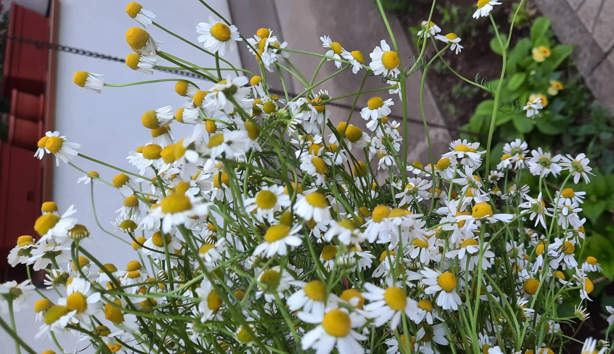

Kaktus - sadnja, zalijevanje i cvjetanje
Kaktusi su porijeklom iz Amerike, uglovnom Sjeverne, Srednje i Južne a pripada porodici Cactaceae koja se sastoji od oko 127 rodova i 1750 poznatih vrsta iz reda Caryophyllales. Riječ kaktus potiče od grčke riječi κάκτος (káktos) koja znači izdržljivost. Poznati su po tome što pripadaju takozvanim sukulentnim biljkama tj biljkama koje su posebne po tome što spremaju vodu u svoje stabljike i listove. Većina vrsta izgubila je pravo lišće i zadržala samo bodlje, koje su vrlo modificirani listovi.
Stabljika kaktusa
Površina stabljike može biti glatka (kao kod nekih vrsta Opuntia) ili prekrivena izbočinama raznih vrsta, koje se obično nazivaju tuberkulama. Većina kaktusa ima stabljiku u nijansama zelene boje, često plavkasto ili smećkasto zelene. Kada je stabljika takve boje, znači da sadrži hlorofil i sposobna je da provodi fotosintezu. Posjeduju i stomate tj male strukture koje se mogu zatvarati i otvarati te na taj način omogućavaju prolaz plinova. Često su vidljivo voštane.
Cvijet kaktusa
Većina vrsta kaktusa cvjeta jednom godišnje, dok neke čak ni jednom. Areole su mjesta iz kojih rastu bodlje i cvijeće. Imaju ih čak i kaktusi koji nemaju bodlje. Period cvjetanja počinje u martu i traje sve do maja.
Vrste kaktusa
Danas u svijetu postoji oko 200 rodova i nekoliko hiljada različitih vrsta kaktusa. Ovisno o njihovom obliku, kaktuse možemo podijeliti na tri vrste:
- Stupasti (Cereus)- uspravni kaktusi koji se kasnije granaju. Manji kaktusi se mogu opisati kao stupasti. Stupci mogu biti horizontalni a ne okomiti. Stenocereus eruca može se opisati kao stupasta iako njene stabiljke rastu uz tlo.
- Plosnati (Opuntia, Opuncija) – kaktusi kojima odgovara mediteranska klima, koji se mogu uzgajati u dvorištu ali ih možete vidjeti i u prirodi. Na engleskom jeziku su poznate kao Pickly Pear. Plod ove vrste kaktusa je jestiv, samo je potrebno ostraniti sve iglice. Sastoje se od kraćih, više kuglastih biljaka od stupastih kaktusa. Mogu biti pojedinačni, kao što je Ferocactus latispinus, ili njihove stabljike mogu formirati grozdove.
- Okrugli (bradavičasti, Mammillaria) – možete ih pronaći kao kratke, buckaste „stupove“ ili kao pojedinačne lopte.
Uzgoj kaktusa
Za najbolju mješavinu zemlje za kaktuse smatra se ona koja se sastoji od sagnjilog lišća, pijeska i gline, odnosno koja sadrži jedan dio pijeska, jedan dio lisnjača i jedan dio ilovaće. Veoma je važno da mješavina bude proznačna i da dobro propušta vodu.
Kako zalijevati kaktuse
Faktori od kojih zavisi zalijevanje kaktusa su: vrsta i veličina kaktusa, temperatura vazduha, supstrati i godišnje doba. Kaktusi su biljka koja ne zahtjeva mnogo vode. Prekomjereno zalijevanje dovodi do smanjenja rasta korijena i truljenja. S vremena na vrijeme, u vodu za zalijevanje možete dodati neka od umjetnih gnojiva, ali ne pretjerujte. Previše dodatnog umjetnog gnojiva nije dobro. Sa dodatnom prehranom najbolje je početi u proljeće, nakon što kaktuse iznesete vani. Bitno je da prije prvog prihranjivanja, kaktuse prvo zalijete vodom pa tek nakon par sati prihranite. Sa prihranjivanjem trebate prestati sredinom ili krajem septembra. U toku proljeća i jeseni najbolje je svaki 7 do 10 dana zalijevati ih, dok u toku ljeta svakih 4 do 5 dana. Što se tiče zime, dovoljno je jednom do dva puta mjesečno. Najbolji pokazatelj vam je zemlja kaktusa, tek kada je ona potpuna suha i već počinje pucati, tek tada zalijete kaktuse. Što se tiče vremena kada ih trebate zalijevati, smatra se da je najbolje navečer, dok količina vode koja je potrebna kaktusu zavisi isključivo od veličine samog kaktusa. Napomena: kaktusi ne vole previše vlage, stoga ih je bolje premalo zalijevati nego previše.
Kako razmnožavati kaktuse?
Da bi razmnožili kaktus potrebna vam je saksija sa zemljom i reznica. Reznicu dobijete na način da odvojite jedan list od ostatka. Potrebno je da dobivenu reznicu ostavite sedmicu dana na suhom da se dobro osuši. Nakon šte se reznica odbro osušila, na mjestu gdje ste je odvojili od ostatka kaktusa, tada je prebacujete u zemlju. Napomena: zemlja mora biti suha i prozračna. Nakon što stavite reznicu u zemlju, nemojte ju zalijevati sve dok ne počne puštati korijene, otprilike za 3 do 4 sedmice. Postoje još dva načina razmnožavanja kaktusa a to su sjemenkom i izdankom.
Kako presaditi kaktus?
Smatra se da je najbolje kaktuse presađivati u proljeće. Ukoliko svoj kaktus presadite barem jednom u toku godine u drugu saksiju sa svježom zemljom, trajat će još duže. Veoma je važno da saksija u koju posadite kaktus ima rupice na dnu. Na taj način će višak vode prilikom zalijevanja da iscuri.
Uskrsni i božićni kaktus
Uskrsni i božićni kaktus dobili su naziv zbog dijela godine u kojem cvjetaju. Pripadaju hibridima brazilskog šumskog kaktusa. Razlika je u tome što božićni kaktus ima porijeklo iz brazilskim kišnih šuma, a uskrsni potječe iz brazilskih suhih šuma. Vrijeme cvjetanja uskrsnog kaktusa je kraj zime i početak proljeća, dok je vrijeme cvjetanja božićnog kaktusa sa vrijeme zimskih praznika. Uskrsni kaktus ima latice raspoređene u lijepi vjenčić, a cvjetovi mogu biti raznih boja. Ove vrste kaktusa vole niže temperature i vlažnu zemlju, čak i u toku dana. Savjetuje se presađivanje ove biljke svake dvije godine, najbolje u proljeće. Potrebno je zamijeniti zemlju, ali biljku vratiti u istu posudu.
Kaktus u kući
Kaktusi zahtjevaju dosta svjetlosti ali ne smijete ih direktno izložiti suncu tokom čitavog dana. Znači potrebno je da imaju mnogo svjetlo ali sunca samo u umjerenim količinama. Smatra se da im najmanje odgovara sjeverna strana, te ih je potrebno okrenuti prema južnoj, zapadnoj ili istočnoj strani.
Ljekovita svojstva kaktusa
Sok pronađen u stabiljakama kaktusa koristi se za pravljenje lijekova i pića. Također, od njihove stabljike i plodova prave se slatkiši za zimu. Neke vrste kaktusa se uzgajaju za stočnu hranu.
Zašto kaktus ne cvjeta?
Najveći razlog zbog kojeg kaktus ne cvjeta je izostanak zimskog mirovanja. Optimalna temperatura za zimsko mirovanje je od 5 do 10 stepeni za većinu vrsta kaktusa. Najbolje bi ih bilo smjestiti u prostoriju u kojoj ima dosta svjetlosti i veoma je važno da ih ne zalijevate tokom perioda zimskog mirovanja.

Kako kaktus obavlja fotosintezu?
Zbog nedostatka pravih listova, povećane stabljike kaktusa provode fotosintezu. Većina kaktusa koristi mehanizam pod nazivom „metabolizam crassulacean acid acid“ (CAM) kao dio fotosinteze.
Zašto kaktus ima bodlje?
Zahvaljujući svojim bodljama, kaktusi odbijaju životinje koje bi se mogle napojiti iz njegovih spremišta vode, tj njegove stabljike i listova. Zbog toga, veći kaktusi mogu preživjeti i do dvije godine bez vode. Pored toga, bodlje pomažu pri sprječavanju gubitka vode smanjujući protok zraka u blizini kaktusa i osiguravajući malo hlada.
Tags

Možda vam se svidi i sljedeće:

